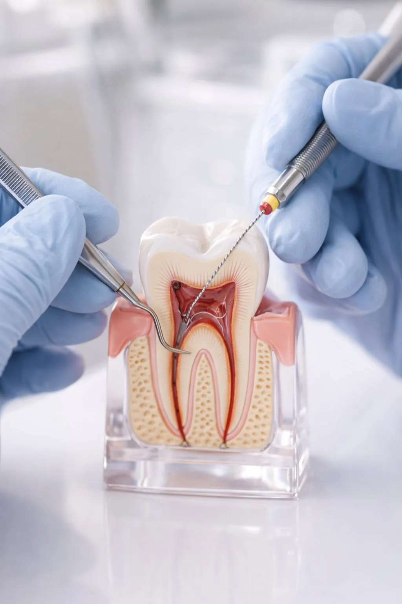

La endodoncia o tratamiento de conductos conserva un diente gravemente afectado evitando su extracción. La Dra. Mª Ángeles Carretero Peláez, especialista, utiliza las últimas técnicas para un tratamiento rápido e indoloro en nuestras consultas de Madrid y Talavera.
La endodoncia elimina la pulpa dental infectada, limpia el interior del diente y lo sella para prevenir reinfecciones. El objetivo es salvar el diente y mantenerlo funcional durante años.
Contrariamente a lo que se cree, una endodoncia bien realizada no duele. Se hace con anestesia local. En Dental Carriches usamos instrumentación rotatoria y localizadores de ápice para mayor precisión.

Radiografía periapical y exploración para confirmar la necesidad del tratamiento.
Anestesia local y acceso a los conductos. Completamente indoloro.
Instrumentación rotatoria para limpiar y conformar los conductos.
Sellado de los conductos con material termoplástico. Posteriormente se realizará una restauración e, idealmente, una corona.
No. Con anestesia local el tratamiento es completamente indoloro.
En la mayoría de casos 1 o 2 sesiones son suficientes.
El diente necesita normalmente una corona para protegerlo.
No es recomendable. Una infección sin tratar puede empeorar y afectar a dientes vecinos.
Sin compromiso · Primera consulta de valoración
Disponible en nuestras consultas de Madrid y Talavera de la Reina